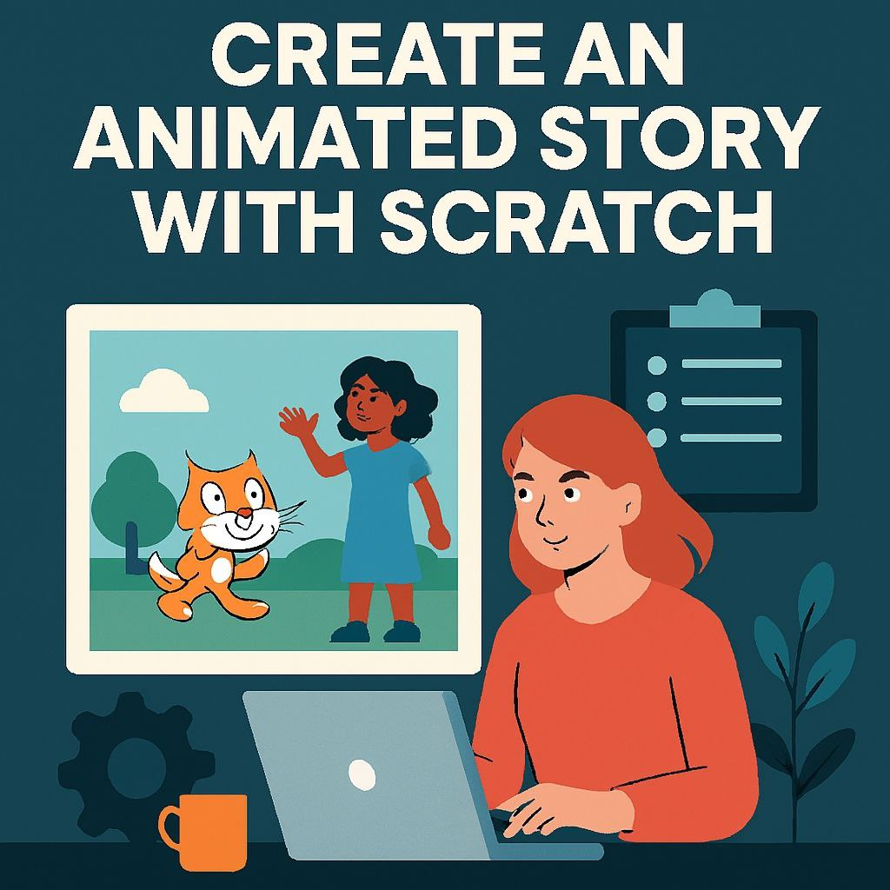
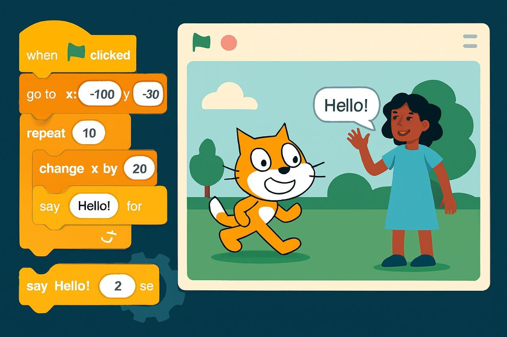
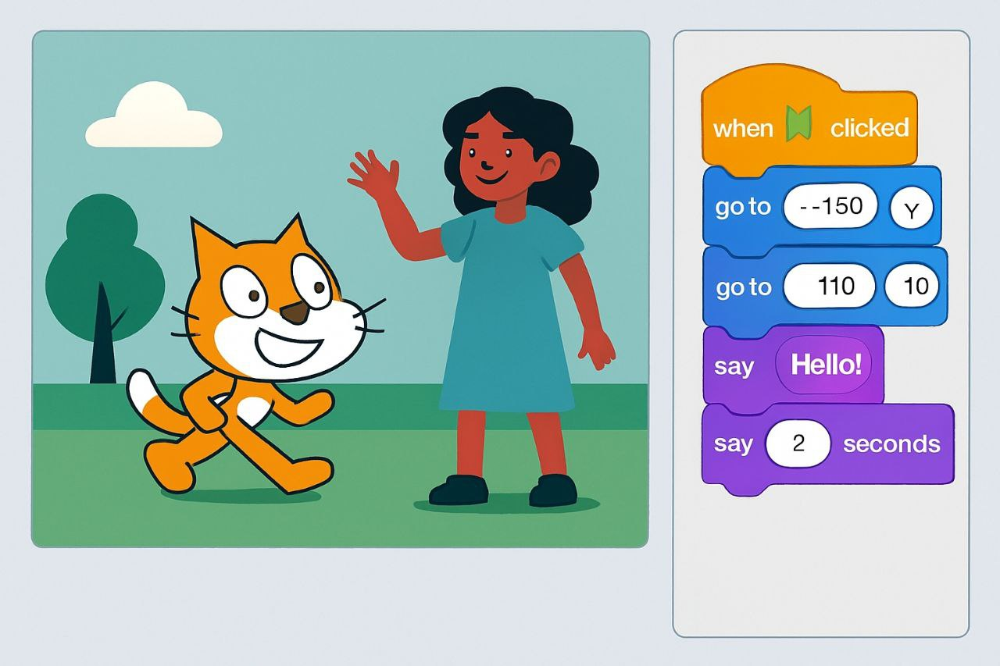
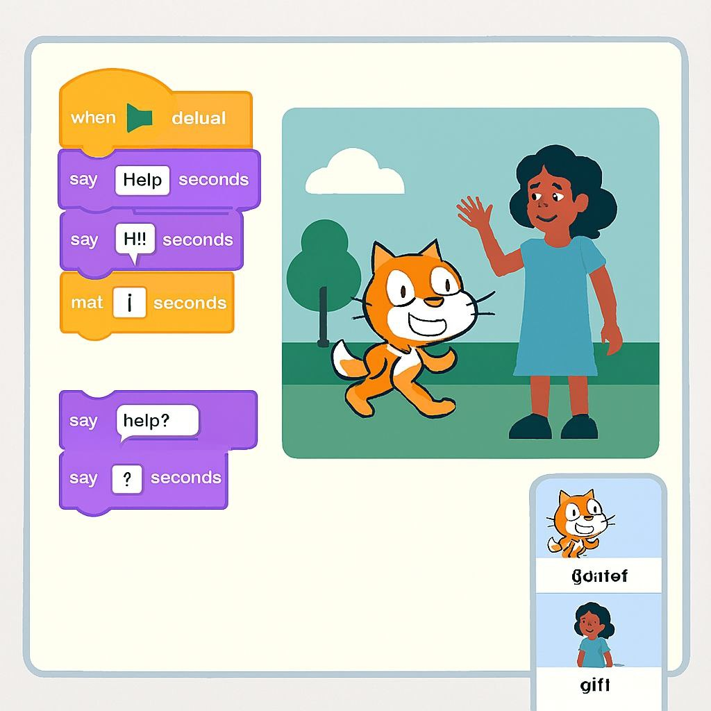

فكرة المشروع الأساسية
قامت الطالبة بإنشاء قصة متحركة باستخدام برنامج Scratch، حيث بدأت باختيار الشخصيات المناسبة وتصميم خلفية بسيطة تعبّر عن مكان الأحداث. بعد ذلك انتقلت إلى مرحلة البرمجة بالكتل، فرتّبت أوامر الحركة والمظاهر والأحداث بطريقة منسّقة لتحديد متى تتحرك الشخصيات، ومتى تتحدث، وكيف تنتقل من مشهد لآخر. استخدمت الطالبة أوامر مثل “عند النقر على العلم الأخضر”، “تحرك 10 خطوات”، “انتظر ثانية”، و“غيّر المظهر” لتبني تسلسلًا منطقيًا يجعل القصة واضحة وسهلة المتابعة.ماذا تعلمت الطالبة؟
تعلّمت الطالبة كيفية تنظيم الأفكار وتحويلها إلى خطوات برمجية صغيرة، وكيفية ضبط التوقيت بين الحركات والحوارات حتى تظهر القصة بشكل طبيعي. كما اكتسبت مهارات في التفكير المنطقي، حل المشكلات، الإبداع، وتنظيم الأحداث داخل بيئة مرئية ممتعة. هذا النوع من المشاريع ساعدها على فهم أساسيات البرمجة بطريقة بسيطة، وفتح لها المجال لتطوير قصص أكثر تعقيدًا في المستقبل من خلال إضافة مشاهد جديدة، مؤثرات صوتية، أو تفاعلات إضافية بين الشخصيات.- الأدوات المستخدمة: Scratch – Blocks – Events – Motion
- مدة الإنجاز: يومان
- نوع المشروع: قصة متحركة تفاعلية
- عدد الشخصيات: شخصيتان رئيسيتان
- المهارات المكتسبة: التفكير المنطقي وحل المشكلات
- العناصر البصرية: خلفية، شجرة، سحب، حركة انتقالية
- هدف المشروع: إنشاء حوار بسيط بين شخصيتين
- مستوى الصعوبة: مبتدئ
تقييم المدرب
90%
أظهرت الطالبة قدرة ممتازة على استخدام الكتل البرمجية وتنظيم القصة بشكل واضح ومتسلسل